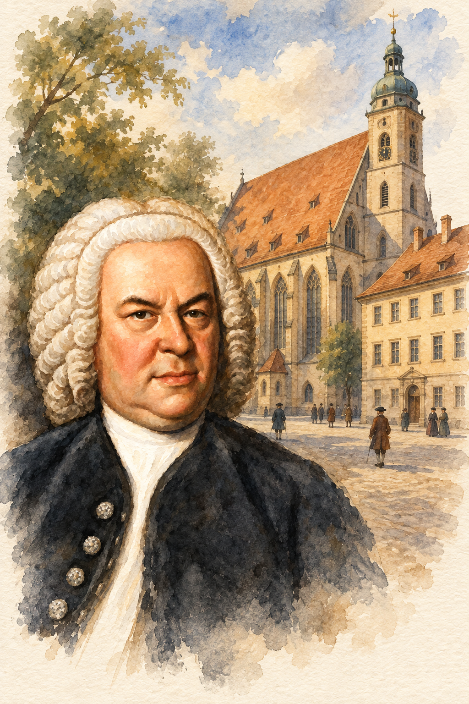
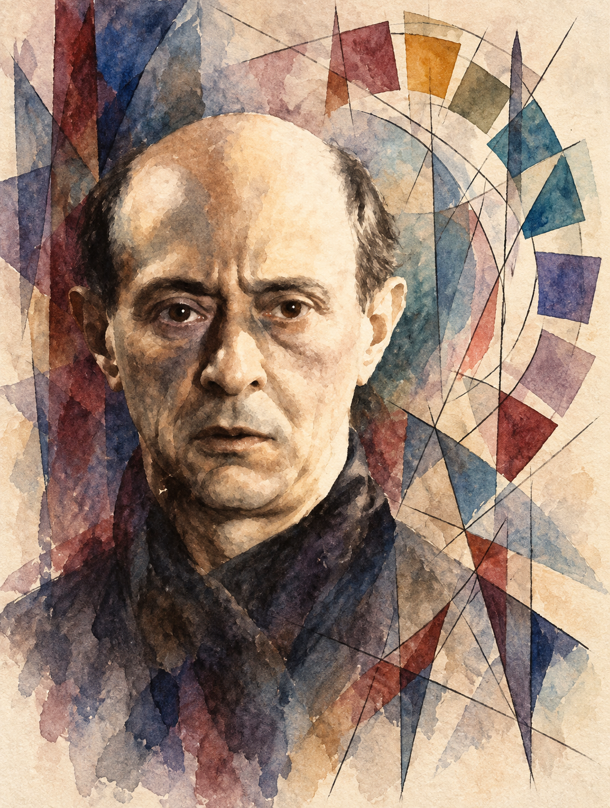
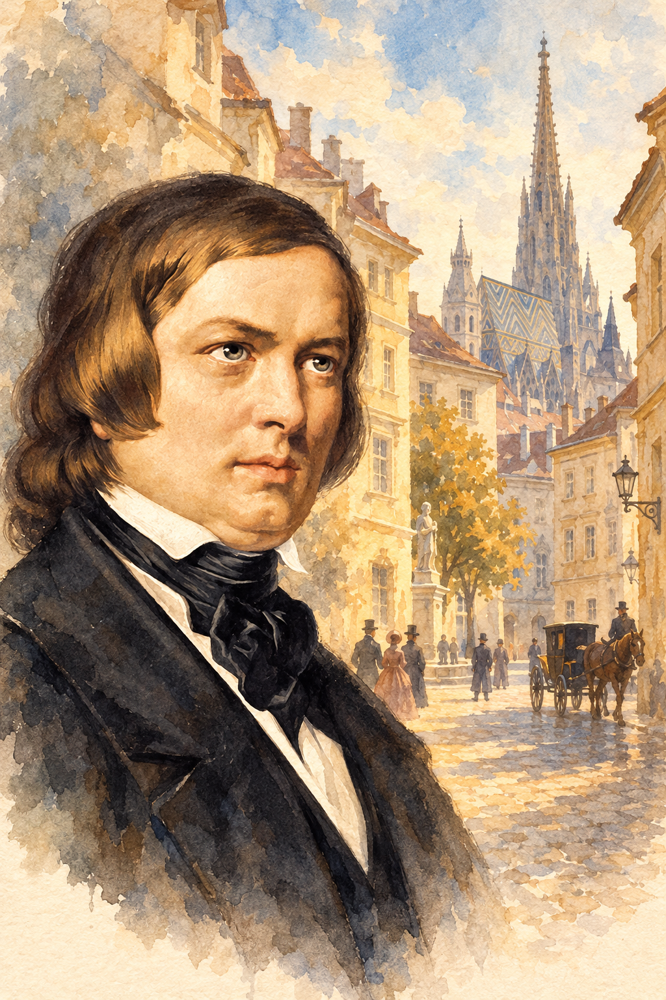
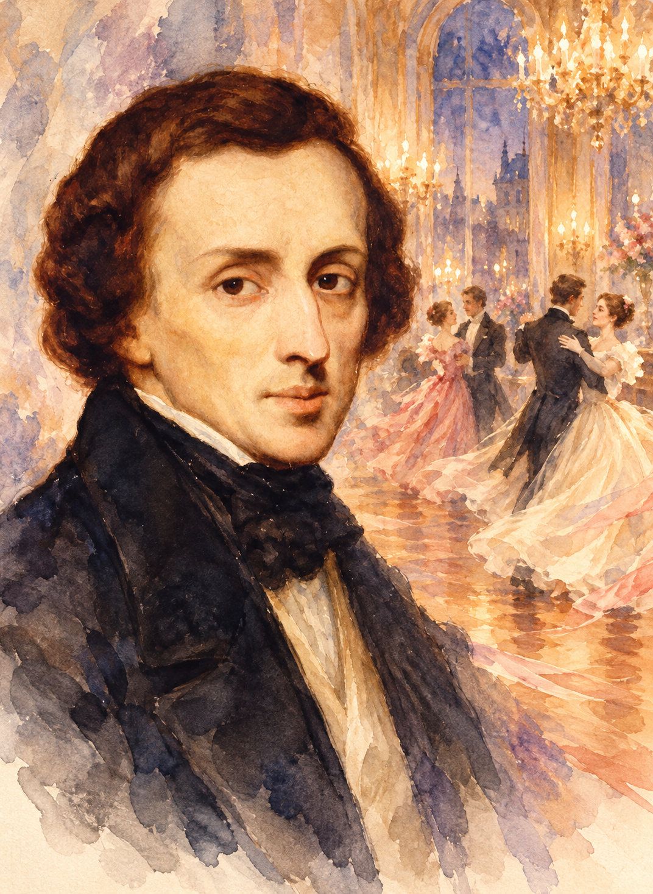
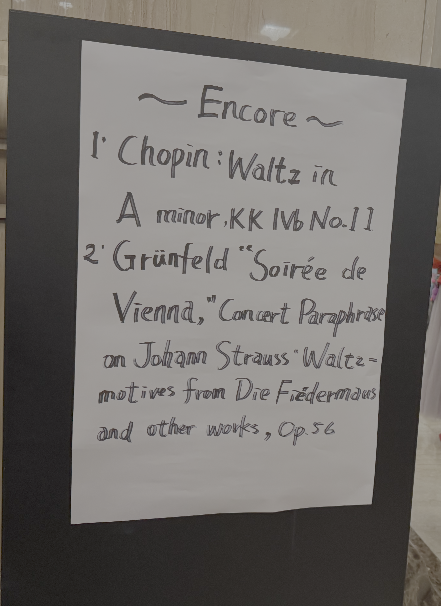

從舞曲的形式，走進不同時代的內心世界
演出資訊：MNA 牛耳藝術官方曲目與演出資訊 ↗。全場含中場休息預估約 130 分鐘，實際曲目與安排以現場公告為準。
這份曲目可以從「舞曲」這條線索來聽：巴赫以多種舞曲建立清楚秩序；荀白克承接古老形式，改用二十世紀的音高語言；舒曼讓狂歡、幽默與私密情緒交錯；蕭邦則在三拍子裡寫出華麗、依戀、憂鬱與沉思。
現場不必追求每個細節都能辨認。先感受音樂的步伐，再注意旋律、伴奏與聲部的關係，如何隨作曲家而改變。
巴赫：降 B 大調《第一號組曲》，BWV 825
Johann Sebastian Bach: Partita No. 1 in B-flat major, BWV 825

這裡的組曲是 Partita，第一號於 1726 年單獨出版，後與其餘五首合為《鍵盤練習曲集》第一部。作品由前奏曲及一系列舞曲構成，原為大鍵琴而寫；在現代鋼琴上，觸鍵、音色與力度能讓交織聲部呈現不同層次。
影音欣賞：席夫 András Schiff｜《第一號組曲》↗
- 前奏曲：聽不同聲部如何接續與回應。
- 阿勒曼、庫朗：留意從容談話般的線條，及輕快向前的步伐。
- 薩拉邦德：裝飾音如何延長語氣、讓和聲更有表情。
- 小步舞曲與吉格：感受舞步重心、雙手交錯與音型在音域間穿梭。
聆聽焦點：當伴奏與旋律不易簡單分開，鋼琴家如何讓每條線清楚，又讓整體自然歌唱？
荀白克：《鋼琴組曲》，Op. 25
Arnold Schoenberg: Suite for Piano, Op. 25

作品寫於 1921 至 1923 年，是荀白克十二音創作的重要作品。它採取新的音高組織方式，卻保留前奏曲、嘉禾舞曲、小步舞曲與吉格舞曲等古老形式；接在巴赫之後，特別能聽見傳承與轉變。
顧爾德 Glenn Gould｜薩爾茲堡現場 ↗ 顧爾德官方頻道｜作品探索（英文）↗
十二音技法，可以怎麼理解？
它以包含十二個不同音高類的音列為基本材料，透過原形、倒影、逆行與移調組織旋律和和聲；不再依靠傳統主音與屬音建立方向感，但節奏、音型、聲部與形式仍讓音樂具有連貫性。第一次聽時，不妨先留意「誰在回答誰」、「哪裡突然停下」與「哪些聲音再次出現」。
- 前奏曲：短促推進，聽動機重複和聲部碰撞。
- 嘉禾舞曲、繆塞特：熟悉的舞步因重音、節奏而偏移。
- 間奏曲、小步舞曲與中段：聽低音旋律、高音伴奏以及聲部模仿。
- 吉格：動機在不同位置接續，形成緊密收束。
舒曼：《維也納狂歡節》，Op. 26
Robert Schumann: Faschingsschwank aus Wien, Op. 26

作品與舒曼 1839 年的維也納生活相關。標題中的 Fasching 指狂歡節，Schwank 帶有詼諧故事或玩笑之意；它是 Op. 26，與《狂歡節》Carnaval, Op. 9 是不同作品。
李希特｜全曲現場 ↗ 皮耶絲｜第一樂章 ↗ 皮耶絲｜第五樂章 ↗
- 快板：熱鬧三拍子主題與插曲接連進場，留意《馬賽曲》的短暫引用。
- 浪漫曲：短小憂鬱的歌唱，留心旋律的停頓和收尾。
- 小詼諧曲：輕快、有彈性的短暫明亮轉換。
- 間奏曲：三連音襯托熱烈旋律；聽旋律如何從音流中浮現。
- 終曲：追蹤快速表面下，樂句如何累積力量走向高潮。
蕭邦：十四首圓舞曲
Frédéric Chopin: Fourteen Waltzes

蕭邦把圓舞曲發展為適合沙龍與音樂會聆聽的鋼琴作品。三拍子步伐依然存在，卻能承載華麗、私密、依戀與憂鬱；作品號比通俗別名更適合作為查找依據。
| 本場順序 | 作品 | 聆聽提示 |
|---|---|---|
| 1–4 | e 小調遺作；Op. 34 No. 3；Op. 64 No. 1〈小狗〉；Op. 69 No. 1〈告別〉 | 從急切、俏皮到旋轉感與溫柔依戀，聽呼吸、觸鍵與比例。 |
| 5–8 | Op. 64 No. 2；Op. 70 No. 1；Op. 69 No. 2；Op. 34 No. 2 | 比較惆悵主題、爽朗舞步、淡淡憂鬱與低音域歌唱。 |
| 9–11 | Op. 64 No. 3；Op. 70 No. 2；Op. 70 No. 3 | 不要只追右手旋律；留意低音與內聲部如何改變重心。 |
| 12–14 | Op. 42；Op. 34 No. 1；Op. 18〈華麗大圓舞曲〉 | 兩拍分組與三拍伴奏交錯，最後以華麗、開闊的舞會氣氛收束。 |
安可曲：從蕭邦的私語，走向維也納的華彩

以下兩首及順序依演出後聽眾紀錄整理；影音連結是作品欣賞版本，不是本場現場錄影。
蕭邦：a 小調圓舞曲，KK IVb No. 11
這首遺作以樸素旋律和清楚三拍子伴奏營造親切、略帶感傷的氣氛。它與正式曲目中的 Op. 34 No. 2 是不同作品；查找時請使用 KK IVb No. 11 或 B. 150。
格倫費爾德：《維也納之夜》，Op. 56
此作取材自小約翰・史特勞斯《蝙蝠》的圓舞曲旋律，以炫技音型與寬廣音域鋪展成鋼琴幻想；在繁複音符之間，仍可追蹤圓舞曲旋律與節奏。
帶進音樂廳的三個問題
- 巴赫與荀白克都運用舞曲形式，節奏、聲部與方向感有哪些相似與不同？
- 舒曼如何從外向狂歡轉入內心，再回到熱烈終曲？
- 十四首蕭邦圓舞曲中，哪些像舞會，哪些更像獨白？